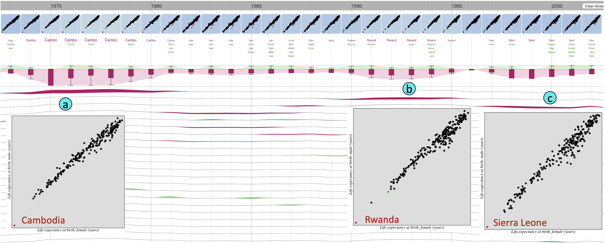

Outliagnostics: Visualizing Temporal Discrepancy in OutlyingSignatures of Data Entries
This page shows the use-cases not presented in our paper due to the space limit.
1. Life expectancy
As shown in Figure 1, the time-series boxplots, and the outlying/inlying streams highlight the 1970s,
early 1990s, and late 1990s/early 2000s as three periods with high outlying scores. The instance profile
section shows Cambodia, Rwanda, and Sierra Leone as the three items (listed on top of the item profile section
and having thicker outlying streams) with higher contributions to the overall outlying scores in
these periods correspondingly. Also, lensing over these periods and clicking on the scatter plots in each of the
periods show the details scatter plots of these data points in the boxes (a), (b), and (c) of the Figure 1
correspondingly. Furthermore, mouse over Cambodia, Rwanda, and Sierra Leone in these boxes,
Outliagnostics shows the life expectancy for females and males as low as 27 and 21 in 1975 for Cambodia,
30 and 26 in 1992 for Rwanda, then 38 and 36 in 1998 for Sierra Leone. These are the consequences of the
1978-1991 Cambodian Civil War, the 1990-1994 Rwanda Civil War, and the 1991-2002 Sierra Leone Civil War
correspondingly.

Figure 1: Outliagnostics highlights Cambodia in the 1970s, Rwanda in the early 1990s and Sierra Leone
in the late 1990s and early 2000s as outliers.
2. US Goods and Service Employment
Users could also investigate individual data item using the search box. Figure 2 shows
the case when a user would like to investigate about Louisiana. The user types ``Louisiana'' into the search box
(a) and clicks search button, the Outliagnostics interface highlights Louisiana in the items profile section and the
scatterplots time series. The thicker outlying stream for this data item over the June to September
2005 period suggests user to mouse over this period and the system brings Louisiana to the top of the item
profile section (b) as it is the main contributor to the outlying scores in this period. The reason for
this event was the impacts of the hurricane Katrina in Louisiana in August 2005 leading to low numbers of
employment in both goods-producing and service-providing.
Figure 2: Affect of hurricane Katrina at Louisiana in August 2005
3. High Performance Computing Center
In this use case, we use Outliagnostics to monitor the healthstatus of a High-Performance Computing
Center (HPCC) at a university. In particular, the 2 variables being monitored are CPU temperature and fan speed.
As shown in Figure 3,the thicker outlying stream in the boxplot time series section(a) suggested to the
users that there might be issues in this period. Also, the Compute 4-17 was placed on top of the item profile
section (b) with a thicker outlying stream in this period. These suggested the HPCC system administrator
look into the Compute 4-17 and later found that the fan was broken during that time. With this use in practice,
we received positive feedback from real users in a real-world application with ease of use and ability to
quickly spot the potential issues.
Figure 3: Monitoring health status of HPCC on Thursday, October 4, 2018: our system highlights
compute-4-17 as an extreme outlier due to a broken fan.